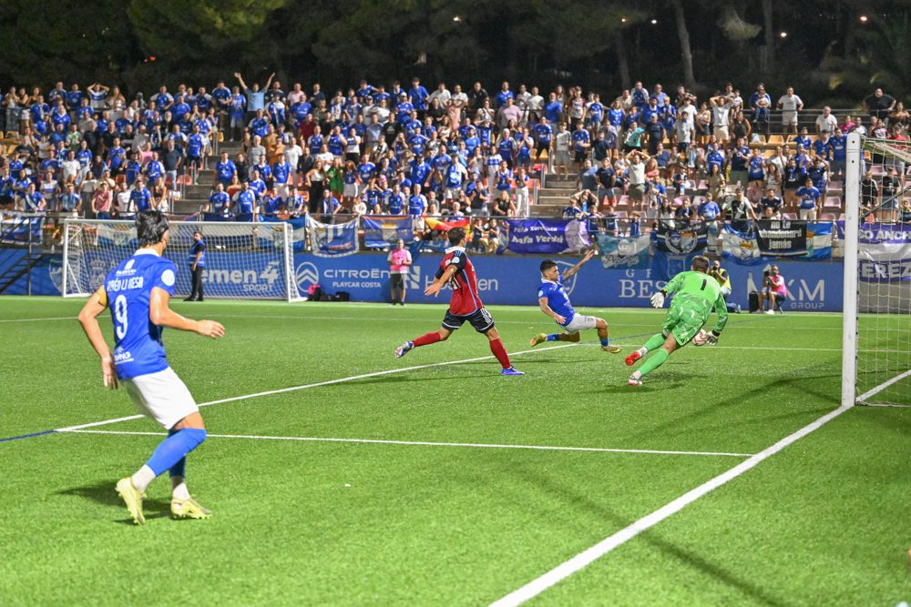

Uno de los mejores locales contra uno de los mejores visitantes: el Xerez pone a prueba el fortín del Atlético Central

Foto: Diario XerecistaEl equipo de Alcalá de Guadaíra solo ha perdido un partido en casa, donde ha encajado un único gol. El Xerez CD llega con 8 puntos de 15 a domicilio y dos victorias seguidas fuera.
El Xerez CD visita este domingo (12:00) el Nuevo Estadio Ciudad de Alcalá en un duelo de contrastes: uno de los locales más fuertes de la categoría contra uno de los visitantes más sólidos.
El Atlético Central, recién ascendido a Segunda RFEF, ha ganado cuatro de sus cinco partidos en casa y solo ha recibido un gol, el de su única derrota como local. Estrenó la categoría con un 2-0 al Recreativo de Huelva, el actual líder, y en la cuarta jornada ganó por el mismo resultado al Sevilla Atlético.
El Xerez, fiable lejos de Chapín
Enfrente estará un Xerez que rinde mejor fuera que en casa. En sus cinco salidas ha sumado dos victorias, dos empates y una sola derrota, ante el Recreativo (1-0). Solo ha encajado tres goles y viene de ganar sus dos últimos desplazamientos con contundencia: 1-3 en Tamaraceite y 0-4 en Sanlúcar.
Dos caras locales
El Atlético Central ha conseguido como local 12 de sus 15 puntos y lejos de su estadio ha encajado 16 de los 17 goles que lleva en contra. Es undécimo, tres puntos por debajo del Xerez, que es quinto con 18.
El partido también se vivirá en la grada. El club xerecista ya ha vendido las primeras 500 entradas y ha puesto a la venta otras 500, y se esperan más de 1.000 aficionados del Xerez en Alcalá de Guadaíra.
🇬🇧 Read in English ← Volver a la portada